Post 1
Anti-Shrinkflation Bill 2026 · Broadcasting (Amendment) Bill 2026 · Electoral (Postal Voting) (Carers) Bill 2026 · Electoral (Amendment) (Voting Age) Bill 2026
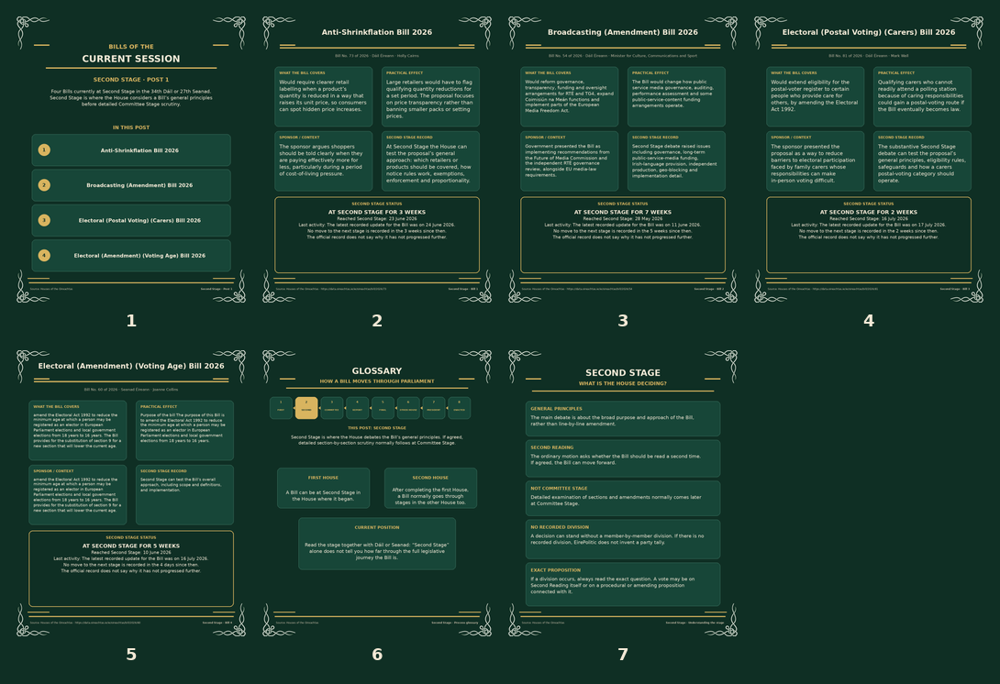
Anti-Shrinkflation Bill 2026 · Broadcasting (Amendment) Bill 2026 · Electoral (Postal Voting) (Carers) Bill 2026 · Electoral (Amendment) (Voting Age) Bill 2026

Defence (Amendment) (No. 2) Bill 2026 · Adult Safeguarding Strategy Bill 2026 · Prevention of Energy Wastage Bill 2026 · Local Government (Control of Horse-Drawn Carriages) Bill 2026
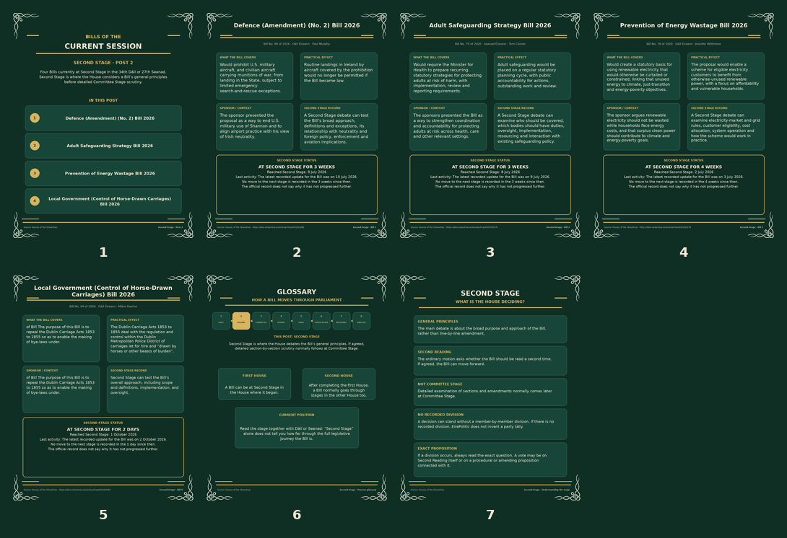
Artificial Intelligence Companion Services (Protection of Children) Bill 2026 · Non-Binary and Intersex Recognition Bill 2026 · Withdrawal of the State from the Migration and Asylum Pact of the European Union Bill 2026 · Disability (Amendment) Bill 2026
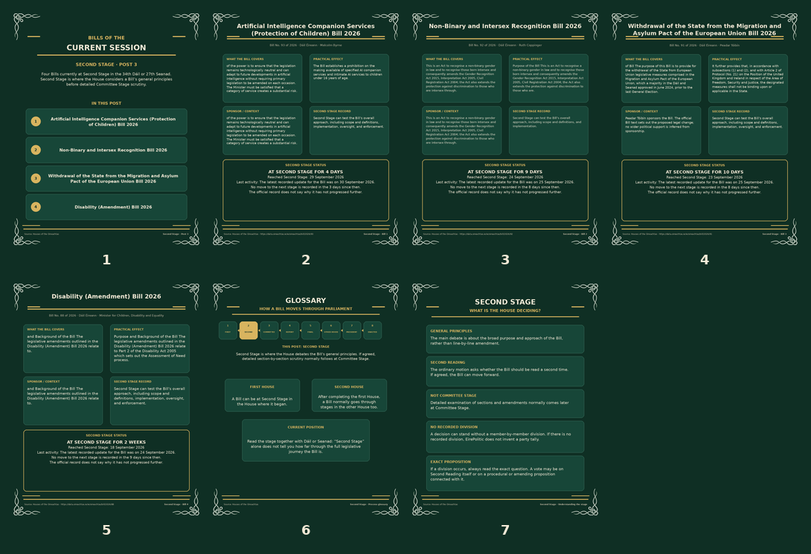
Dublin Local Authorities (Visitor Accommodation Levy) Bill 2026 · Public Health (Tobacco) (Amendment) (Smokefree Generation) Bill 2026 · Road Traffic (Amendment) (Jax’s Law) Bill 2026 · National Vehicle and Driver File, Road Traffic and Roads Bill 2026
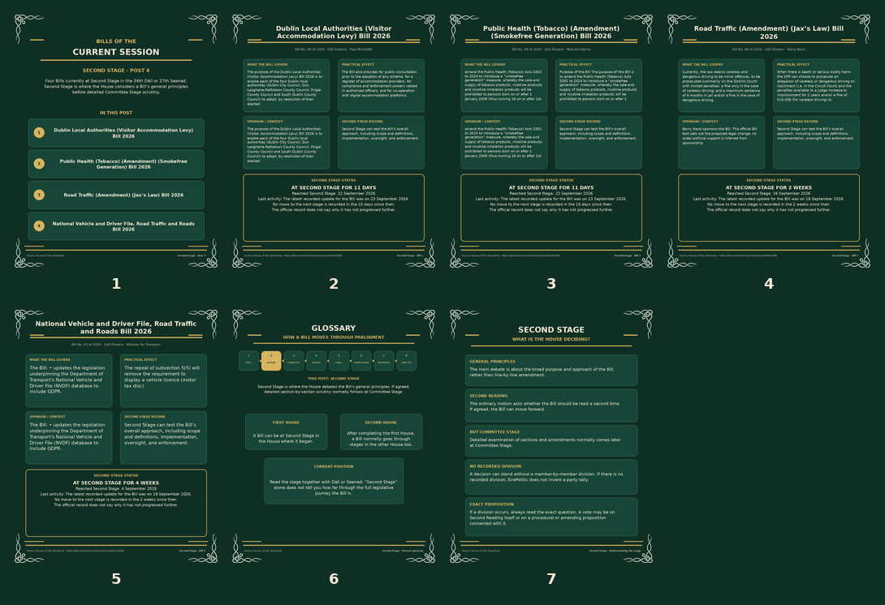
Electricity Regulation (Amendment) (No. 3) Bill 2026 · Social Housing Passport Bill 2026 · Civil Liability (Child Sexual Abuse Proceedings Against Unincorporated Bodies of Persons) Bill 2025 · Planning and Development (Provision of Public Housing) Bill 2026

Public Health (Tobacco Products and Nicotine Inhaling Products) (Amendment) Bill 2026 · Electricity Regulation (Amendment) (No. 2) Bill 2026 · Health (Amendment) Bill 2026 · Health (Abolition of Three Day Wait Rule) (Amendment) Bill 2026
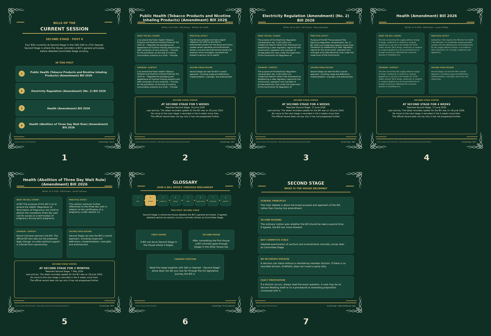
School Meals Nutritional Standards Bill 2026 · Forestry (Critical Infrastructure) (Amendment) Bill 2026 · Criminal Justice (Theft and Fraud Offences) (Amendment) (Work Equipment) Bill 2026 · Media Regulation Bill 2026
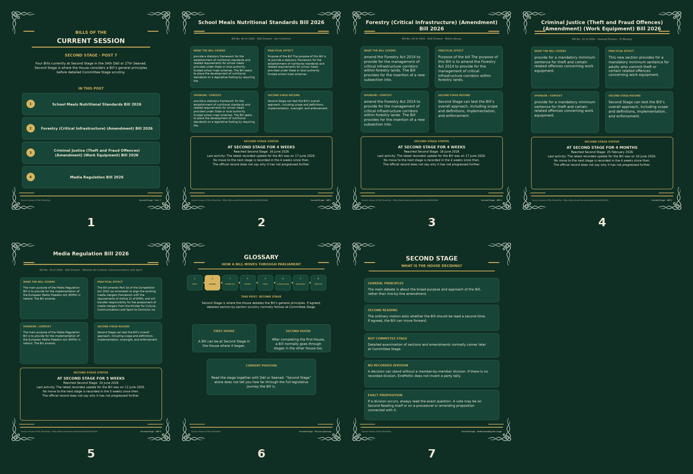
Protection of Voice and Image Bill 2025 · Prohibition of Sulky-Racing Bill 2026 · Garda Síochána (Recording Devices) (Amendment) Bill 2026 · Comptroller and Auditor General (Due Diligence Complicity Audit) (Amendment) Bill 2026
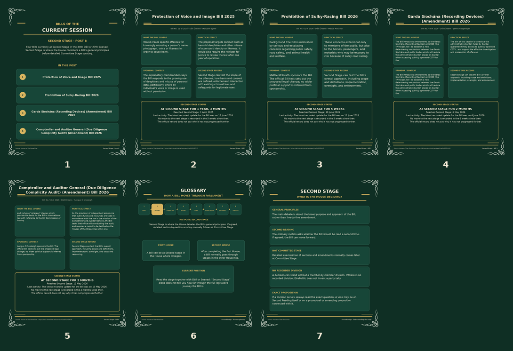
National Minimum Wage (Equal Pay for Apprentices and Young Workers) Bill 2026 · Work Life Balance Bill 2026 · Residential Tenancies (Temporary Prohibition of Termination Notices) Bill 2026 · Work Life Balance (Right to Remote Work) Bill 2026
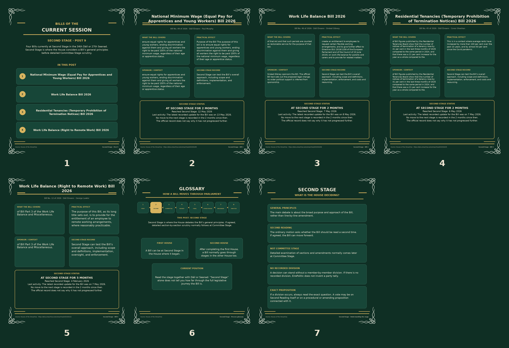
Health (Regulation of Termination of Pregnancy) (Amendment) Bill 2026 · Forty-first Amendment of the Constitution (Voting Rights in Presidential Elections) Bill 2025 · Local Government (Cities) Bill 2026 · Education (Medical Emergencies in Schools) Bill 2026
Open Post 10 individual slides
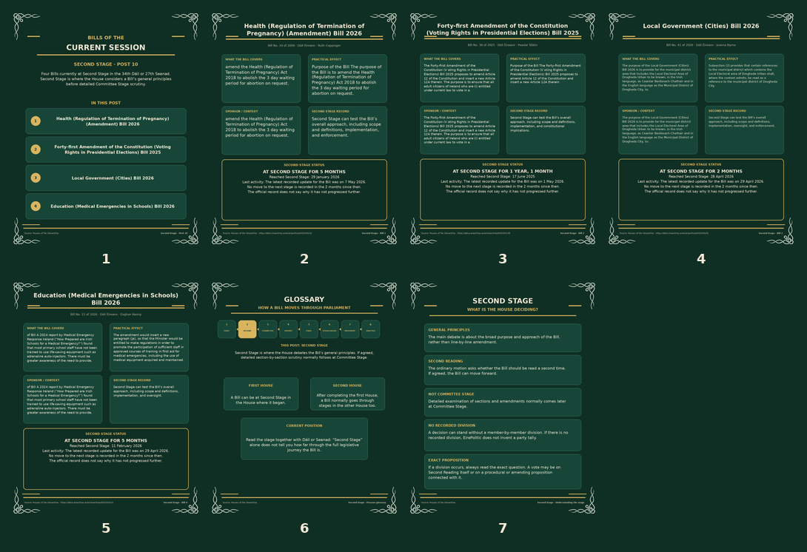
Valuation (Amendment) Bill 2026 · Gender Recognition (Amendment) (Prisons) Bill 2025 · Child Maintenance Bill 2026 · Life Annuity (Ireland) Bill 2026
Open Post 11 individual slides
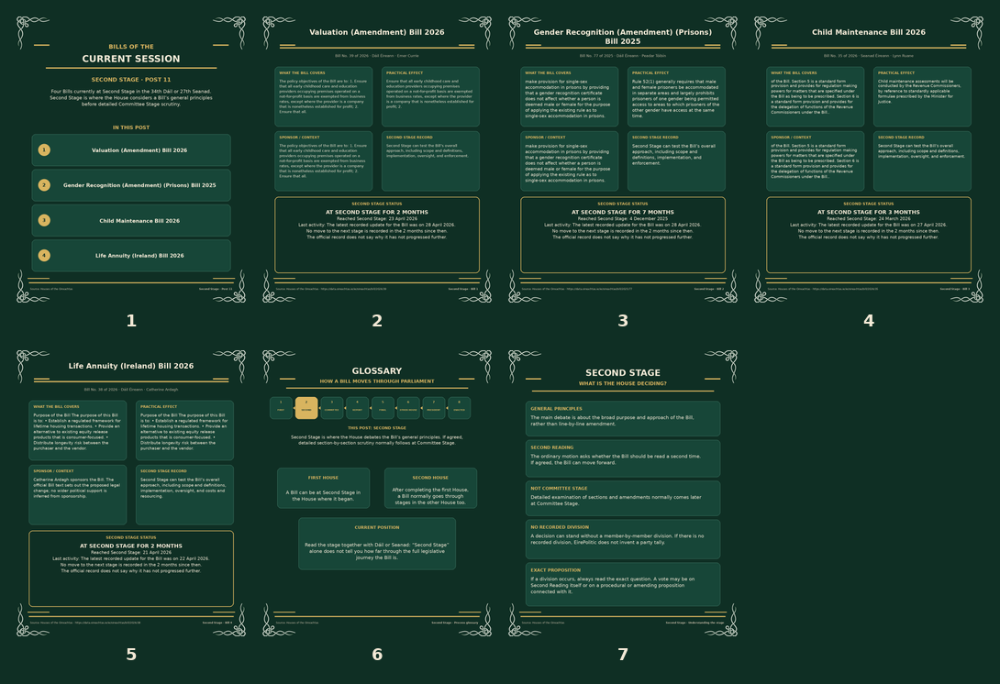
Proceeds of Crime and Related Matters Bill 2025 · Disregard of Historic Offences for Consensual Sexual Activity Between Men Bill 2025 · Organisation of Working Time (Leave for Health Screening Purposes) Bill 2025 · Forty-first Amendment of the Constitution (Right to Housing) Bill 2026
Open Post 12 individual slides
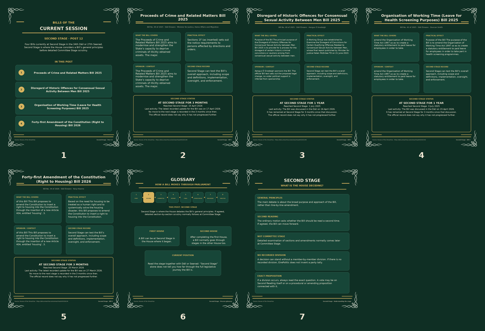
Planning and Development (Material Interest) Bill 2026 · Antarctic Treaty (Accension and Implementation) Bill 2026 · Housing Loans Regulations (Fresh Start - Buyout) (Amendment) Bill 2026 · Electricity Regulation (Amendment) (Standing Charges) Bill 2026
Open Post 13 individual slides
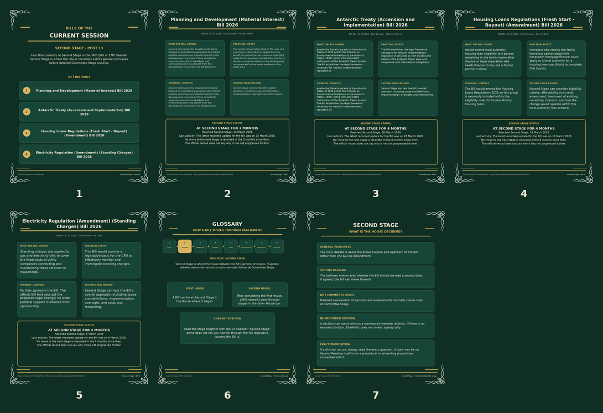
Irish Language Name and Address of the Person (Length Accent) Bill 2026 · Official Languages (Right to Use the Irish Language) (Amendment) Bill 2026 · Online Safety (Recommender Algorithms) Bill 2026 · Repeal of Exempted Development Regulations Bill 2026
Open Post 14 individual slides
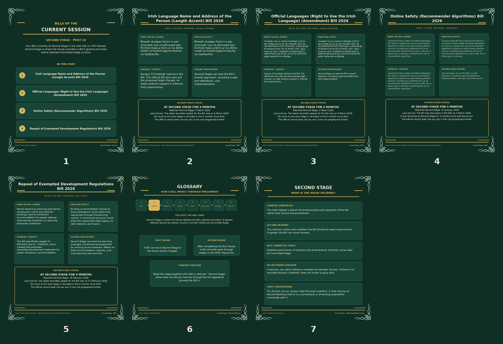
Public Art Mural (Exempted Development) Bill 2026 · Harassment, Harmful Communications and Related Offences (Amendment) Bill 2026 · Universal Access to Social Housing (Abolition of Income Limits) Bill 2026 · Education (Leave for Injuries) Bill 2025
Open Post 15 individual slides
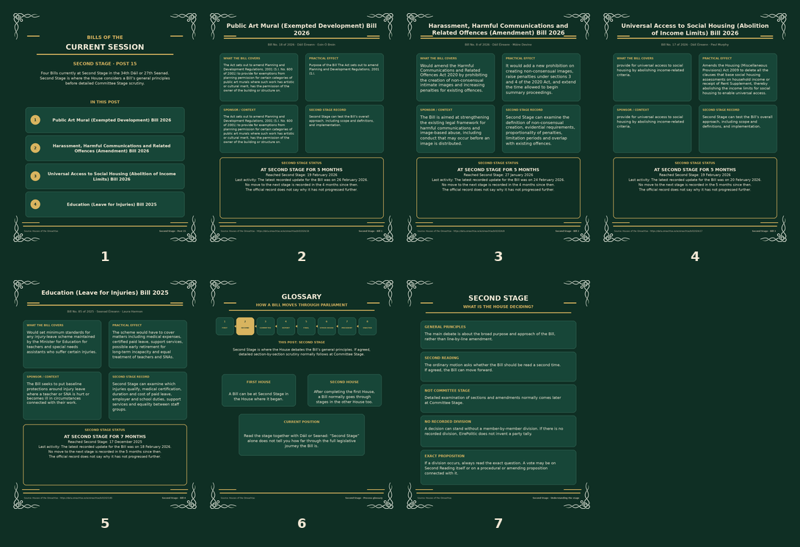
Maternity Protection (Child Bereavement) (Amendment) Bill 2026 · Regulation of Drones Bill 2025 · Harassment, Harmful Communications and Related Offences (Amendment) (No. 2) Bill 2026 · River Boyne Task Force Bill 2023
Open Post 16 individual slides
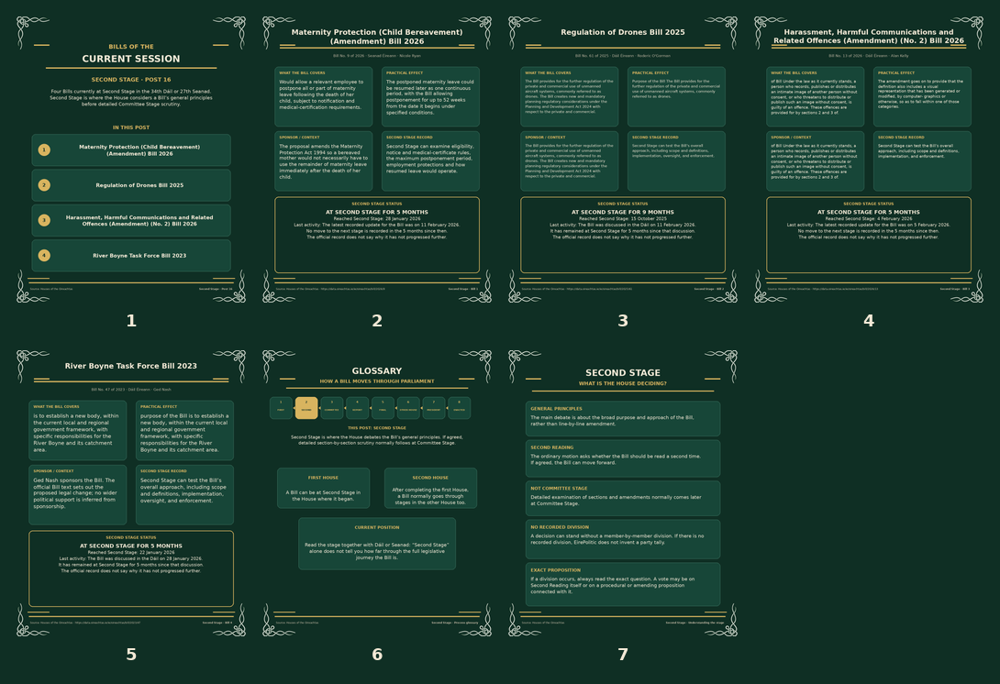
Agri-Food Regulator (Amendment) Bill 2026 · Sale of Nitrous Oxide and Related Products Bill 2025 · Equal Status (Access to Toilet Facilities) Bill 2026 · Residential Tenancies (Winter Ban on Evictions) Bill 2025
Open Post 17 individual slides
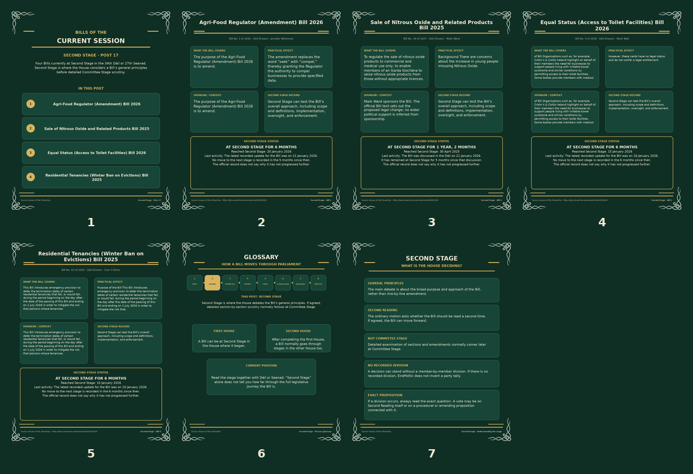
National Minimum Wage (Inclusion of Young Persons, Apprentices and Interns) Bill 2025 · Animal Health and Welfare (Ban on Fox Hunting) Bill 2025 · Health (Waiting Lists) Bill 2024 · Dog Welfare (Amendment) Bill 2025
Open Post 18 individual slides
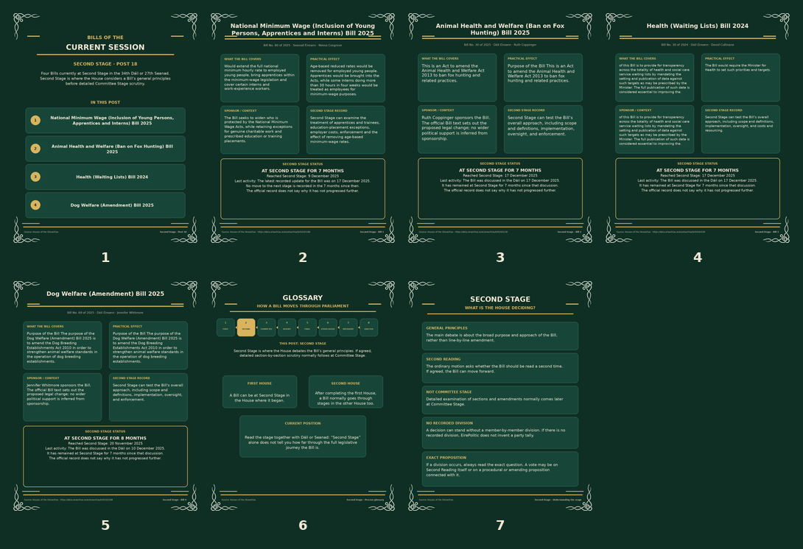
Local Government (Support for Elected Members) Bill 2024 · Electricity (Supply) (Amendment) (No. 2) Bill 2025 · Wind Turbine Regulation Bill 2025 · Seán Lemass Dublin International Airport Bill 2025
Building Energy Rating (BER) Standards for Private Rented Accommodation Bill 2025 · Forty-first Amendment of the Constitution (Reduction of Voting Age to Sixteen Years) Bill 2025 · Arts (Recognition of Comedy) (Amendment) Bill 2024 · Emergency Inspection of Dublin Zoo Bill 2025
Open Post 20 individual slides
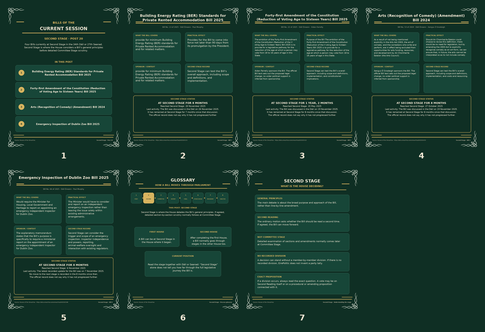
Companies (Protection of Title: Accountant) Bill 2025 · Domestic Violence (Free Travel Scheme) Bill 2025 · Industrial Relations (Boycott of Joint Labour Committees) Bill 2025 · Protection of Retail Workers Bill 2025
Open Post 21 individual slides
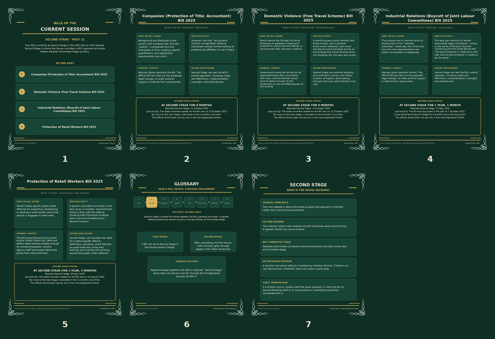
Wildlife (Amendment) Bill 2025 · Occupying Power (Securities and Handling of Settlement Goods) Bill 2025 · Taxes Consolidation (Development of Regional Film Industry) (Amendment) Bill 2025 · Compulsory Purchase Order Bill 2025
Open Post 22 individual slides
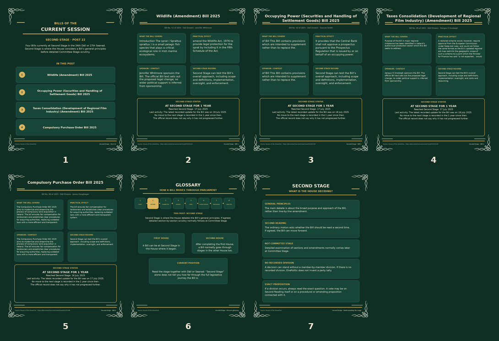
Road Traffic and Roads (Blood Bikes Exemption) (Amendment) Bill 2025 · Coroners (Amendment) Bill 2025 · Health (Availability of General Practitioner Services) Bill 2025 · Health (Scoliosis Treatment Services) Bill 2024
Open Post 23 individual slides
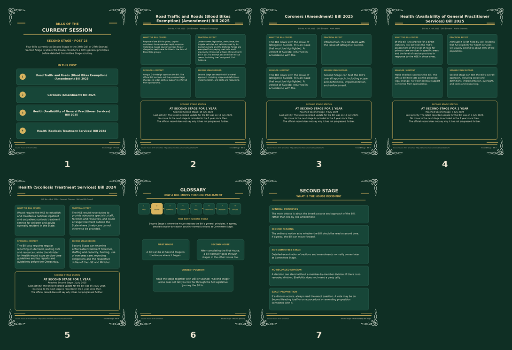
Animal Health and Welfare (Welfare of Pigs) Bill 2025 · Broadcasting (All Ireland Service) (Amendment) Bill 2025 · Healthcare (Transparent Payments) Bill 2022 · Criminal Law (Prohibition of the Disclosure of Counselling Records) Bill 2025
Taxes Consolidation (Rights of Performers and Film Workers) (Amendment) Bill 2025 · Dereliction and Building Regeneration Bill 2025 · Planning And Development (Exempted Development - External Wall Insulation) Bill 2025 · Equality (Miscellaneous Provisions) Bill 2025
Open Post 25 individual slides
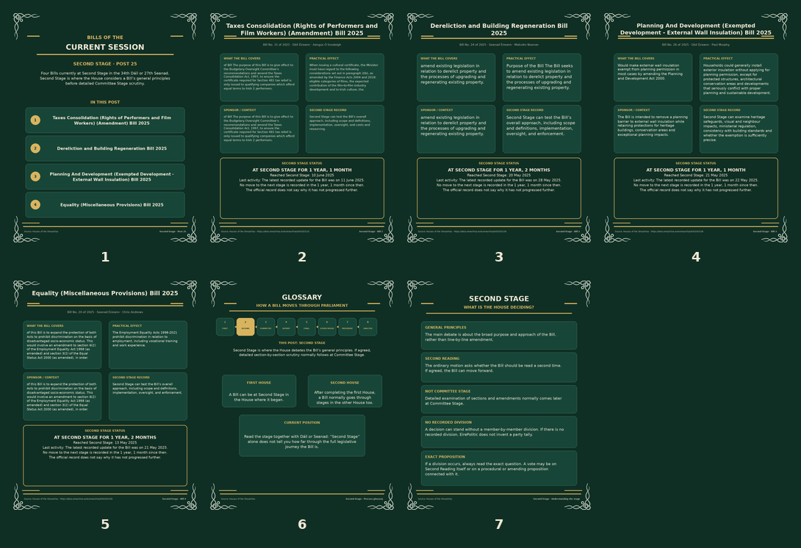
Water Services (Amendment) Bill 2025 · Public Health (Restriction on Sale of Stimulant Drinks to Children) Bill 2025 · Children’s Health (Ospidéal Náisiúnta Kathleen Lynn do Leanaí) (Amendment) Bill 2025 · Guardianship of Infants (Amendment) Bill 2025
Open Post 26 individual slides
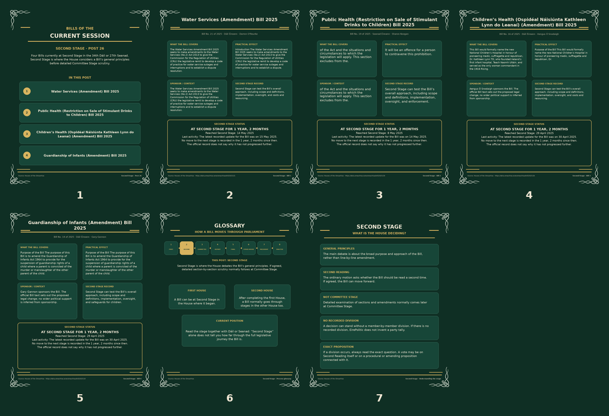
Health (Postponement of Certain Leave) Bill 2024 · Clean Air (Smoky Coal Ban) Bill 2021 · Thirty-ninth Amendment of the Constitution (Judicial Oath of Office) Bill 2025 · Domestic Violence (Amendment) (No. 3) Bill 2024
Open Post 27 individual slides
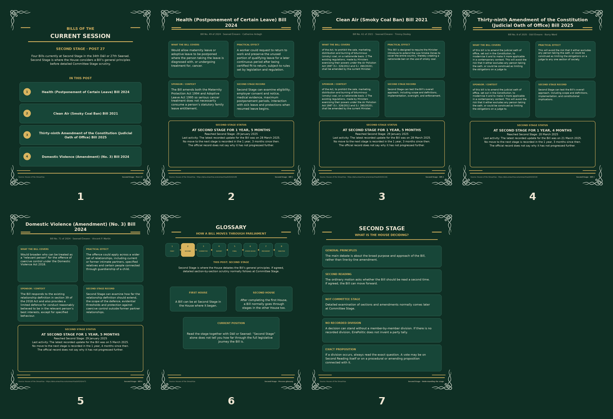